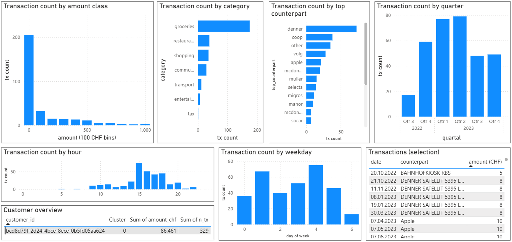
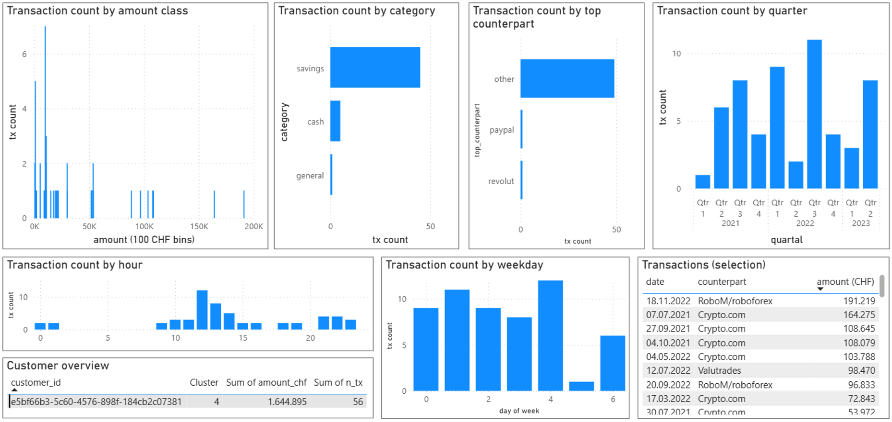

Clustering Results
The clustering analysis revealed five distinct behavioral segments.
To make the results usable for non-technical teams, each cluster was interpreted
in terms of spending behavior, activity level, and real-world usage patterns.

[Cluster comparison charts]
The charts highlight clear differences in how each segment uses the product.
Cluster 0 shows high transaction frequency with low average amounts,
indicating frequent everyday usage.
In contrast, Cluster 2 and Cluster 4 are characterized by
lower frequency but significantly higher transaction values,
reflecting more deliberate, goal-driven usage such as savings or occasional large payments.
Activity patterns further separate the segments.
Cluster 3 stands out with long recency and minimal activity,
signaling dormant or churned users, while Cluster 0 and Cluster 1 remain
consistently active with shorter time since last use.
These differences suggest distinct engagement and churn risk profiles across segments.
Taken together, the visualizations show that customer value is driven by
different behavioral mechanisms—frequency for some segments and
transaction size for others—underscoring the need for segment-specific engagement
strategies rather than a one-size-fits-all approach.

Action guidance by segment
- Frequent small spenders: focus on retention through convenience and reliability
- Light but active users: encourage upsell by highlighting additional features and value
- Occasional high spenders: support high-value moments with tailored offers
- Dormant users: prioritize reactivation with targeted reminders and incentives
- Savings-focused users: reinforce trust and simplify large-value transactions
From clusters to personas
Cluster 0: Martina, 38, part-time Marketing Manager

This persona represents highly active users who make frequent, low-value transactions for everyday expenses.They rely on the app as a daily payment tool, indicating strong engagement but limited value per transaction.
Cluster 4: Sophia, 32, software engineer

This persona represents users who make infrequent but high-value transactions, primarily for savings and cash-related purposes. They engage with the app selectively rather than daily, indicating trust in the platform for larger financial movements.
 GitHub
GitHub